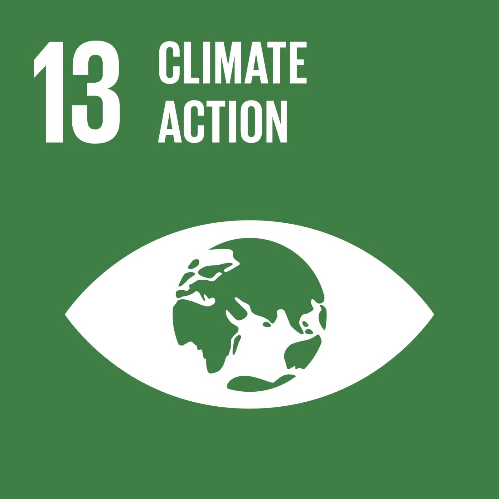
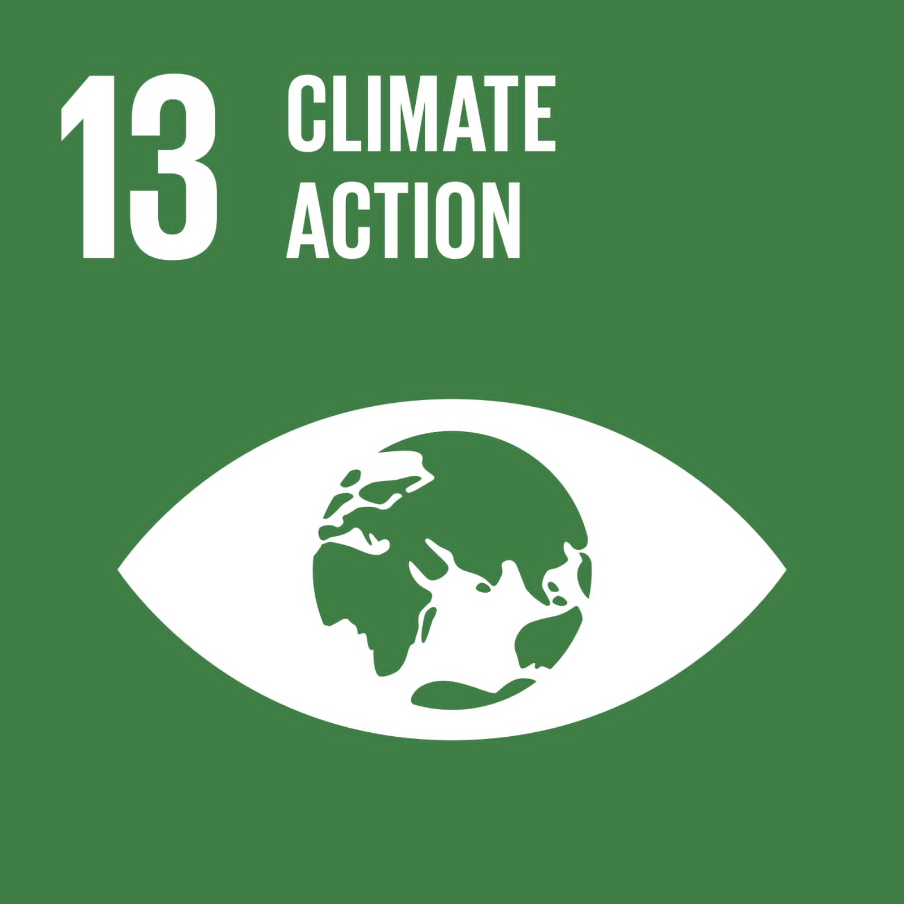

لن يمكن تحقيق أهداف التنمية المستدامة إلا بالتزام قوي بالشراكة والتعاون على المستوى الدولي. وفي حين زادت المساعدة الإنمائية الرسمية المقدمة من البلدان المتقدمة بنسبة 66 في المائة بين عامي 2000 و2014، فإن الأزمات الإنسانية الناجمة عن الصراعات أو الكوارث الطبيعية لا تزال تتطلب المزيد من الموارد والمعونات المالية. كما تحتاج بلدان كثيرة إلى المساعدة الإنمائية الرسمية لتشجيع النمو والتجارة. إن العالم اليوم أكثر ترابطا من أي وقت مضى. ويعد تحسين فرص الوصول إلى التكنولوجيا والمعرفة وسيلة هامة لتبادل الأفكار وتعزيز الابتكار. كذلك فإن تنسيق السياسات لمساعدة البلدان النامية على إدارة ديونها، فضلا عن تشجيع الاستثمار لصالح أقل البلدان نموا، أمر حيوي لتحقيق النمو والتنمية المستدامين. وتسعى أهداف التنمية المستدامة إلى تعزيز التعاون بين بلدان الشمال والجنوب، وفيما بين بلدان الجنوب من خلال دعم الخطط الوطنية الرامية لتحقيق جميع الأهداف. ويشكل تعزيز التجارة الدولية ومساعدة البلدان النامية على زيادة صادراتها جزءا من تحقيق نظام تجاري عالمي قائم على قواعد ومنصفة يكون عادلا ومفتوحا ومفيدا الجميع.
 
